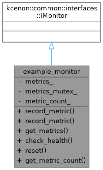
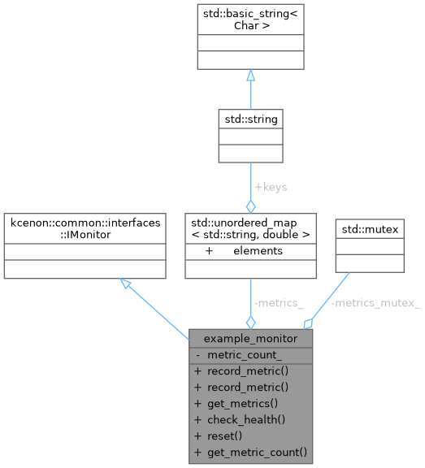

Example monitor implementation demonstrating IMonitor interface. More...


Public Member Functions | |
| kcenon::common::VoidResult | record_metric (const std::string &name, double value) override |
| kcenon::common::VoidResult | record_metric (const std::string &name, double value, const std::unordered_map< std::string, std::string > &tags) override |
| kcenon::common::Result< ci::metrics_snapshot > | get_metrics () override |
| kcenon::common::Result< ci::health_check_result > | check_health () override |
| kcenon::common::VoidResult | reset () override |
| size_t | get_metric_count () const |
Private Attributes | |
| std::unordered_map< std::string, double > | metrics_ |
| std::mutex | metrics_mutex_ |
| size_t | metric_count_ = 0 |
Detailed Description
Example monitor implementation demonstrating IMonitor interface.
This is a simple in-memory monitor that tracks metrics without requiring a full monitoring_system dependency.
- Examples
- di_pattern_example.cpp.
Definition at line 100 of file di_pattern_example.cpp.
Member Function Documentation
◆ check_health()
|
inlineoverride |
- Examples
- di_pattern_example.cpp.
Definition at line 157 of file di_pattern_example.cpp.
References metric_count_.
◆ get_metric_count()
|
inline |
- Examples
- di_pattern_example.cpp.
Definition at line 176 of file di_pattern_example.cpp.
References metric_count_, and metrics_mutex_.
◆ get_metrics()
|
inlineoverride |
- Examples
- di_pattern_example.cpp.
Definition at line 143 of file di_pattern_example.cpp.
References metrics_, and metrics_mutex_.
◆ record_metric() [1/2]
|
inlineoverride |
- Examples
- di_pattern_example.cpp.
Definition at line 107 of file di_pattern_example.cpp.
References metric_count_, metrics_, metrics_mutex_, and kcenon::common::ok().

◆ record_metric() [2/2]
|
inlineoverride |
Definition at line 121 of file di_pattern_example.cpp.
References metric_count_, metrics_, metrics_mutex_, and kcenon::common::ok().
◆ reset()
|
inlineoverride |
- Examples
- di_pattern_example.cpp.
Definition at line 167 of file di_pattern_example.cpp.
References metric_count_, metrics_, metrics_mutex_, and kcenon::common::ok().
Member Data Documentation
◆ metric_count_
|
private |
- Examples
- di_pattern_example.cpp.
Definition at line 104 of file di_pattern_example.cpp.
Referenced by check_health(), get_metric_count(), record_metric(), record_metric(), and reset().
◆ metrics_
|
private |
- Examples
- di_pattern_example.cpp.
Definition at line 102 of file di_pattern_example.cpp.
Referenced by get_metrics(), record_metric(), record_metric(), and reset().
◆ metrics_mutex_
|
mutableprivate |
- Examples
- di_pattern_example.cpp.
Definition at line 103 of file di_pattern_example.cpp.
Referenced by get_metric_count(), get_metrics(), record_metric(), record_metric(), and reset().
The documentation for this class was generated from the following file:
- examples/di_pattern_example.cpp